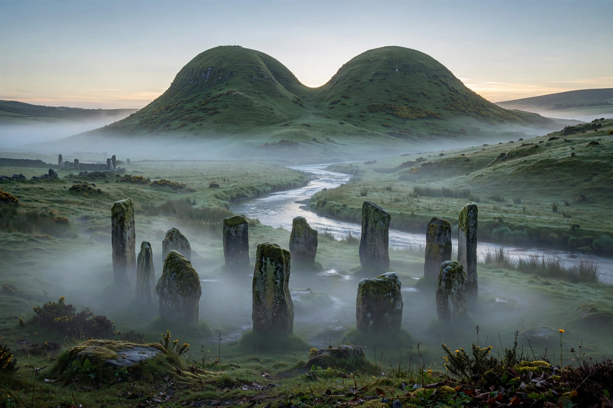

From Wikipedia, the free encyclopedia
| Danu | |
|---|---|
| Affiliation | Irish mythology; ancestral mother goddess of the Tuatha Dé Danann |
| People | Tuatha Dé Danann — 'the people of the goddess Danu' |
| Landmarks | The Paps of Danu (Dá Chích Danann), County Kerry |
| Cognates | Welsh Dôn; possibly the river-goddess Danu of the wider Indo-European world |

Danu is the ancestral goddess of Irish mythology from whom the Tuatha Dé Danann — "the people (or tribes) of the goddess Danu" — take their name: the divine race of the Lebor Gabála who ruled Ireland before the mortal Milesians and withdrew into the hollow hills (the sídhe) as the fairies of later folklore. Of Danu herself the medieval texts say almost nothing directly: she has no surviving myth, no consort, no deeds — only the name on the people, the two breast-shaped hills in Kerry called the Paps of Danu (or of Anu), and a presence inferred behind the goddess Anu, called in Cormac's Glossary the mother of the gods of Ireland and a goddess of plenty.
Danu's elusiveness is itself the datum: scholars reconstruct her from her name and her kin — the Welsh mother-goddess Dôn, matriarch of the Children of Dôn in the Mabinogion; the Vedic Danu, mother of the Danavas and a goddess of waters; and the great rivers (Danube, Dnieper, Don) whose names may carry the same Indo-European root for flowing water. On that evidence Danu is read as an ancient mother of waters and of a divine tribe, older than the texts that barely remember her. Modern Paganism, undeterred by the silence of the sources, has restored her to active worship as the great mother of the Irish gods — a revival her medieval silence makes impossible either to confirm or to correct from the record.
Celtic mythology · Brigid · Lugh · The Morrigan · Mythology